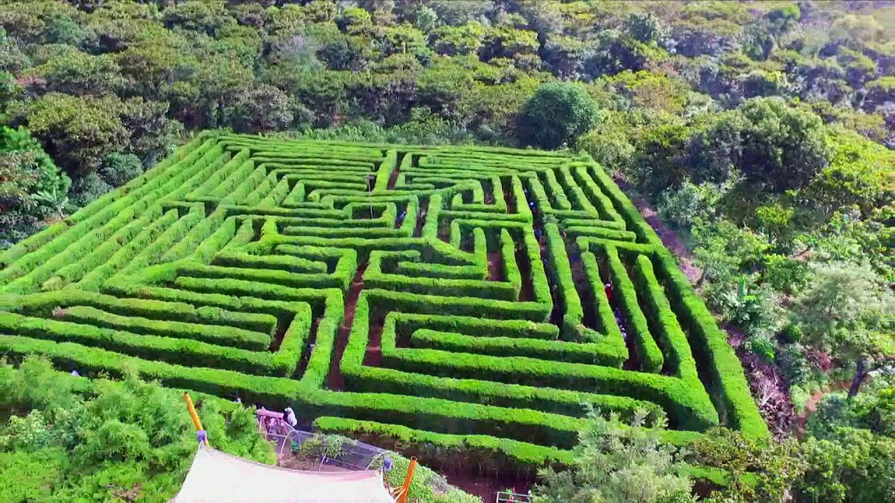
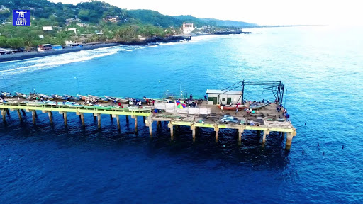
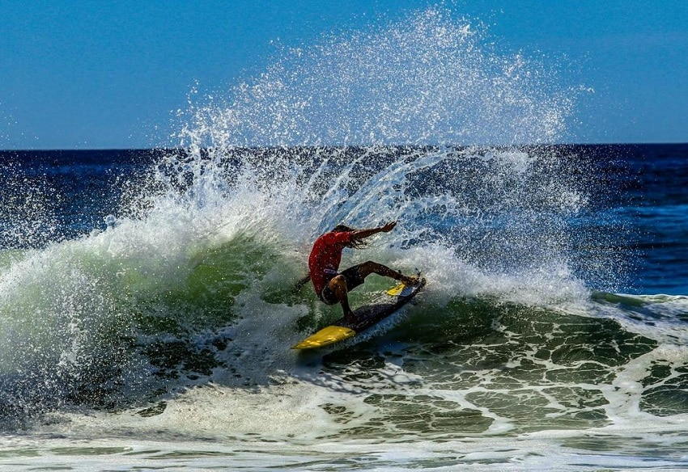
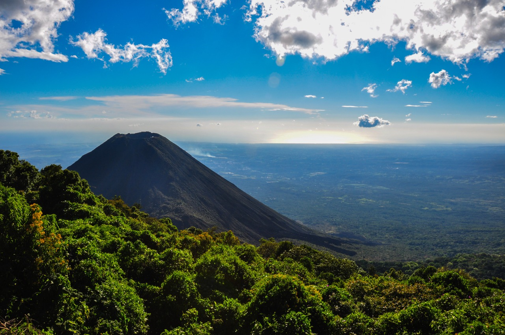

El Salvador es parte de ti
Comienza bien tu 2020 con diferentes planes: El Salvador es uno de los principales destinos turísticos, gracias a los diversos atractivos que posee nuestro país. En este sentido es importante señalar que nuestro país el unico en donde 45 minutos es la diferencia entre una playa y un volcan.
El secreto mejor guardado de la madre naturaleza
Descubre los destinos secretos
El largo camino hacia la libertad
Tenemos tours saliendo desde la ciudad de San Salvador todos los fines de semana y una propuesta de tours privados espectacular.

Enigmaticos

Por excelencia

Surf City
